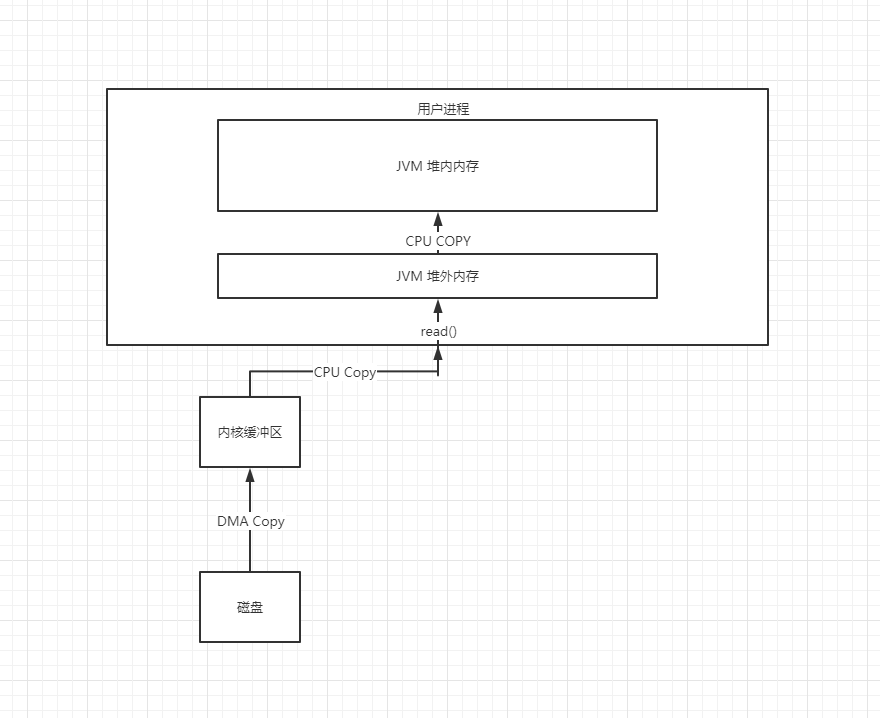
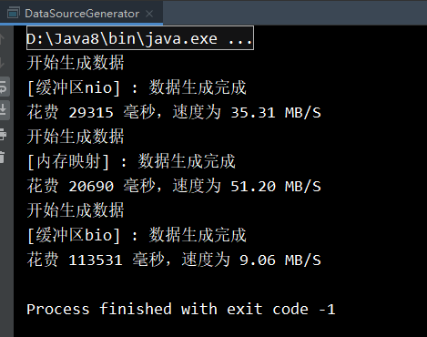

Java中的IO方式大致分为如下几种
- 普通IO，也叫做BIO，基于流模型的阻塞式IO，相关的类大部分都是InputStream，OutputStream，Reader，Writer下的子类。
- NIO，也是大家认为效率较高的IO方式之一，相关的类有 ByteBuffer，FileChannel等。
- mmap内存映射，这是一种将文件直接映射到内存地址的方式，是一种非常快速的IO方案，相关的类有FileChannel，MappedByteBuffer
但是在分析各种IO方式的优化策略的时，首先至少需要了解一下，使用Java进行一次磁盘读取，到底进行了那些步骤？
标准的一次文件读肯定涉及以下几个拷贝步骤
- 将数据从硬件读取到内核态的内核缓冲区中
- 将内核缓冲区的数据读取到用户态的 JVM 中
此外，底层通过 write 、read 等函数进行 IO 系统调用时，需要传入数据所在缓冲区起始地址和长度，但是由于我们使用的是 Java，Java 中的对象存在 Java 的堆中，由于 GC 的存在，对象在堆中的位置是会不断变动的，所以在用户态的 JVM 和 内核缓冲区之间，还有一个不会被 GC 所干扰的堆外内存区作为缓冲区，所以这里又多了一个拷贝步骤。
- 将堆外内存区的数据读取到堆中。
整体流程如下

一次标准的文件读会经过三次数据拷贝，那么一次完整的文件读写就是六次数据拷贝，这样显然效率会比较低。这将是我们可以优化的一个点。
具体方案
所有示例方案针对本地文件写入的方式，这是我在一次比赛中遇到的问题，下面也基本记录了我的调研过程
对于BIO来说，我们可以优化的往往就是为我们的输入流增加缓冲区，在 JDK 中，我们可以使用封装好的方法，用装饰器模式来补充我们的代码。示例代码如下
BufferedOutpuStream bufferedoutstream = new BufferedOutputStream(new FileOutputStream(file));
默认的缓冲区的大小是 8KB ，你可以使用带缓冲区大小的构造方法，根据程序运行环境的大小来调整缓冲区大小。比如磁盘的最小写入单位来确认，推荐这篇文章 https://tech.meituan.com/2017/05/19/about-desk-io.html。除了字节流有缓冲区，字符流同样也有缓冲区，使用方法基本一致。
对于 mmap 内存映射技术来说，我在调研了基本原理之后，自己上手实践了一下，得出了结论——这种IO方式是真的快。贴一段示例代码
try (RandomAccessFile memoryAccessFile = new RandomAccessFile(BASE_DIR + fileName, "rw")) {
FileChannel fileChannel = memoryAccessFile.getChannel();
MappedByteBuffer mappedByteBuffer = fileChannel.map(FileChannel.MapMode.READ_WRITE, 0, TARGET_FILE_SIZE);
// 设置内存初始偏移段
int offset = 0;
while (true) {
byte[] bytes = generateLine().getBytes();
// 计算内存偏移段+即将加入的字节数量是否超出一开始的限制
if (offset + bytes.length > TARGET_FILE_SIZE) break;
// 设置映射起始位置
mappedByteBuffer.position(offset);
mappedByteBuffer.put(bytes);
// 移动偏移段
offset += bytes.length;
}
} catch (IOException e) {
e.printStackTrace();
}但是在后续的调研中，我又了解到mmap之所以快，事实上是因为借助了内存来进行加速，从我们的代码也可以看出，事实上
MappedByteBuffer中的注释说的很清楚A direct byte buffer whose content is a memory-mapped region of a file.
这就是一块堆外内存，我们的数据也是先写到这块堆外内存里面，然后依赖操作系统的定时刷盘，或者自己手动调用
MappedByteBuffer.force()方法刷盘。
然后我的比赛环境内存非常有限，只有 2G 的内存，但是我的问价大小却是介于 0-8G之间，所以要是数据量一大到8G，刷盘又不及时，整个机器基本上就卡死了（aliyun 1核2G学生机实测）。所以虽然这个方案很快，但是却不适用于我当前的场景。第三个就是我现在选择的 NIO 方案了，使用FileChannel + 多级缓存。
首先关于这里的缓存，我们上文中提到了一次文件读的额外的数据拷贝——将堆外内存区的数据拷贝到堆中，那么要是我的数据是直接通过堆外内存来操作的，那么在一次文件读写中是不是就可以减少两次次数据拷贝了呢？Java为我们提供了 DirectByteBuffer 这个类让我们可以分配操作堆外内存，我们将使用这个类作为我们的缓存。
由于我的大部分记录大小都是 192 B 左右，要是逐条写入内存，由于离磁盘的最小写入单位（调研得到大部分为 4 K，要是数据不足 4K 消耗时间和 4K相同）相差较大。
那么我将几条位于相同分组的记录作为一个文件块写入一级缓存，当一级缓存满时，将一级缓存的内容写入二级缓存，二级缓存大小可以按照磁盘配置来设定，我这里暂时取了4 * 16 = 64KB，当二级缓存满时，使用一个单线程池将其异步刷入磁盘。示例代码如下// 申请 100条 记录的堆外内存
ByteBuffer byteBuffer = ByteBuffer.allocateDirect(192 * 100);
// 申请 64KB 的二级缓存
ByteBuffer flushBuffer = ByteBuffer.allocateDirect(1024 * 64);
try (RandomAccessFile randomAccessFile = new RandomAccessFile(BASE_DIR + fileName, "rw");
FileChannel channel = randomAccessFile.getChannel()) {
while (true) {
byte[] bytesLine = generateLine().getBytes();
if (channel.size() + bytesLine.length >= TARGET_FILE_SIZE) break;
int remain = byteBuffer.remaining();
if (bytesLine.length > remain) {
flush(byteBuffer, flushBuffer, channel);
}
byteBuffer.put(bytesLine);
}
} catch (IOException e) {
e.printStackTrace();
}/**
* @param byteBuffer 一级缓存
* @param flushBuffer 二级刷盘缓存
* @param channel 管道
* @description 缓冲区容量不足，写入二级缓存，若二级缓存即将慢，进行刷盘
*/
public void flush(ByteBuffer byteBuffer, ByteBuffer flushBuffer, FileChannel channel) {
// 反转一级缓存为读Mode
byteBuffer.flip();
// 剩余可读缓存
int remain = byteBuffer.remaining();
byte[] records = new byte[remain];
byteBuffer.get(records);
byteBuffer.clear();
// 其他线程异步刷盘
FLUSH_THREAD.execute(() -> {
try {
// 检查二级缓存是否足够
if (flushBuffer.remaining() < records.length) {
// 读出二级缓存中的内容
flushBuffer.flip();
// 写入管道
channel.write(flushBuffer);
flushBuffer.clear();
}
flushBuffer.put(records);
} catch (IOException e) {
e.printStackTrace();
}
});
}
速度测试
这是三种形式在写入 100 MB 数据的时候的速度。

nio在没有优化前的速度是和bio基本一致的。在当前这个小内存下，这个优化速度我还是比较满意的。